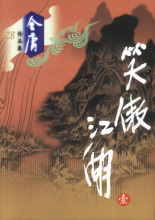

笑傲江湖
《笑傲江湖》是中国现代作家金庸创作的一部长篇武侠小说，于1967年开始创作并连载于《明报》，1969年完成。 这部小说通过叙述华山派大弟子令狐冲的江湖经历，反映了武林各派争霸夺权的历程。
图书封面
情节梗概
华山派大弟子令狐冲生性豁达不羁，初入华山武功平凡，令狐冲后遇高人授以“独孤九剑”，更意外取得五岳各派剑法精髓，因而引致师父岳不群的猜疑，借口逐出师门。其实岳不群表面正直，内里奸诈，为独得旷世秘笈“葵花宝典”，竟设计谋令武林各派相互暗算，唯最终作法自毙。令狐冲自幼与不群之女岳灵珊情投意合，岂料林平之的出现，令岳灵珊转投其怀抱。 后令狐冲结识黑木崖首领的独女任盈盈，二人志趣相投。 几番生死误会之后，彼此才明白互相深爱对方，然而盈盈已身中剧毒，奄奄一息。经历了世间的霸权纷争，令狐冲与任盈盈终于知音共赏，结为伉俪，从此笑傲江湖。
作品目录
| 章节号 | 章节名 |
|---|---|
| 01 | 灭门 |
| 02 | 聆秘 |
| 03 | 救难 |
| 04 | 坐斗 |
| 05 | 治伤 |
| 06 | 洗手 |
| 07 | 授谱 |
| 08 | 面壁 |
| 09 | 邀客 |
| 10 | 传剑 |
| 11 | 聚气 |
| 12 | 围攻 |
| 13 | 学琴 |
| 14 | 论杯 |
| 15 | 灌药 |
| 16 | 注血 |
| 17 | 倾心 |
| 18 | 联手 |
| 19 | 打赌 |
| 20 | 探狱 |
| 章节号 | 章节名 |
|---|---|
| 21 | 囚居 |
| 22 | 脱困 |
| 23 | 伏击 |
| 24 | 蒙冤 |
| 25 | 闻讯 |
| 26 | 围寺 |
| 27 | 三战 |
| 28 | 积雪 |
| 29 | 掌门 |
| 30 | 密议 |
| 31 | 绣花 |
| 32 | 并派 |
| 33 | 比剑 |
| 34 | 夺帅 |
| 35 | 复仇 |
| 36 | 伤逝 |
| 37 | 迫娶 |
| 38 | 聚歼 |
| 39 | 拒盟 |
| 40 | 曲谐 |
创作背景
《笑傲江湖》自1967年4月20日至1969年10月12日连载于《明报》。 “笑傲江湖”语出吴承恩《西游记》第九回“袁守诚妙算无私曲，老龙王拙计犯天条”中渔夫的“西江月”词中一句“得来烹煮味偏浓，笑傲江湖打哄”。
主要人物
- 令狐冲
- 任盈盈
- 岳灵珊
- 林平之
- 岳不群
- 左冷禅
其他人物
- 史镖头
- 郑镖头
- 白二
- 陈七
- 老蔡
- 劳德诺
- 余人彦
- 贾人达
- 林震南
- 余沧海
- ......